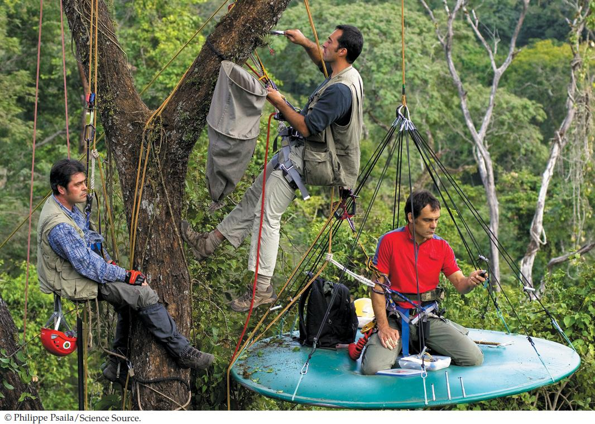

| 23 | Animal Origins and Diversity |
|
KEY CONCEPTS
23.1Distinct Body Plans Evolved among the Animals 23.2Some Animal Groups Fall outside the Bilateria 23.3Protostomes Have an Anterior Brain and a Ventral Nervous System 23.4Arthropods Are Diverse and Abundant Animals 23.5Deuterostomes Include Echinoderms, Hemichordates, and Chordates 23.6Life on Land Contributed to Vertebrate Diversification 23.7Humans Evolved among the Primates |

Entomologists collecting insects from a tree canopy in the Yungas rainforest of Argentina. Such research illuminates the vast number of insect species that remain undescribed by science.
|
About 1.3 million species of animals have been discovered and named by biologists. One group of animals, the insects, accounts for more than 1 million of these species, or more than half of all known species of living organisms. Although these numbers may seem incredibly large, they represent a relatively small fraction of the total animal diversity that is thought to exist on Earth.
As recently as the 1980s, many biologists thought that about half of existing insect species had been described, but today they think that the number of described insect species may be a much smaller fraction of the total number of living species. Why did they change their minds?
A simple but important field study suggested that the number of existing insect species had been significantly underestimated. Knowing that the insects of tropical forests—the most species-rich habitat on Earth—were poorly known, entomologist Terry Erwin made a comprehensive sample of one group of insects, the beetles, in the canopies of a single species of tropical forest tree, Luehea seemannii, in Panama. Erwin fogged the canopies of 19 large L. seemannii trees with a pesticide and collected the insects that fell from the trees in collection nets. His sample contained about 1,200 species of beetles—many of them undescribed—from this one species of tree.
Erwin then used a set of assumptions to estimate the total number of insect species in tropical evergreen forests. His assumptions included estimates of the number of species of host trees in these forests, the proportion of beetles that specialized on a specific species of host tree, the relative proportion of beetles to other insect groups, and the proportion of beetles that live in trees versus leaf litter. From this and similar studies, Erwin estimated that there may be 30 million or more species of insects on Earth. Although recent tests of Erwin’s assumptions suggest 30 million was an overestimate, it is clear that the vast majority of insect species remain to be discovered.
Erwin’s pioneering study highlighted the fact that we live on a poorly known planet, most of whose species have yet to be named and described. Much of the undiscovered diversity occurs among several groups of physically small yet biologically diverse animal groups, although even many larger species of animals continue to be discovered.
Besides beetles, which other groups of animals are thought to contain many more species than are known at present?